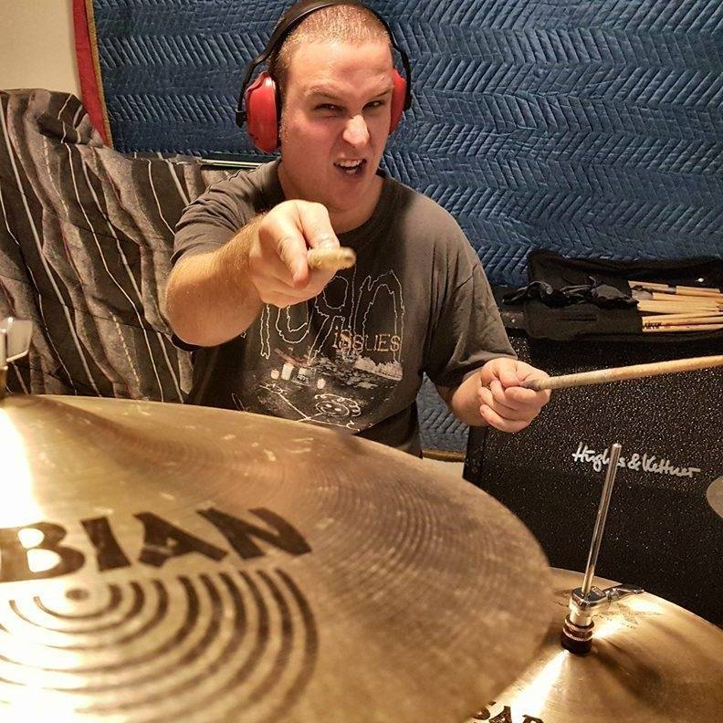

Assignment One
Matthew Dolence
s3020028
About Me
I feel that I had a privileged childhood being able to grow up in a small Victorian country town, Mildura; to parents who were horticulturists. Both my parents have a Croatian background with Dad’s parents arriving in Australia in the 1930s and Mum’s parents arriving in the 1940s. Both grandparents set up base in Adelaide and then found their ground in Mildura at the top of Victoria where my Mum and Dad met. Although my parents spoke Croatian, I could not, except the odd swear words with my cousins! My family had a vineyard where it produced a variety of grapes. The vineyard provided freedom for my imagination and hours of joy working on the property throughout the year with my other three siblings.
I completed all my primary and secondary education in Mildura, attaining my VCE in 2001. I then was fortunate to move to Melbourne to complete and obtain a Diploma in Telecommunications at RMIT in 2004. Over the years I have also completed multiple online IT training courses for my current role and presently I have started a Degree in IT.
Apart from my interest in IT, I am an avid Drummer. I have played the Drums since I was seven, and have also taught the drums to students at High School. I have been in a number of (unknown) bands which have toured Australia and released a number of albums onto the Interwebs.
Interest in IT
Personally, my interest in IT is in the fact that enabled hardware can be connected in a way to provide instant communication to others.
IT has been embedded into me from an early age by my Grandfather who worked with computers and telecommunications during his career. Ever since that exposure, I have pursued knowledge into how things work, what makes them work, why and how things can talk to each other and how things came to be. Over the last two decades, I have been passionate about building Computer systems, Maintaining Hardware, System Administration, Networking and encapsulating all these elements into home and work networks, hosting game servers and providing advice for family and friends.
Ever since I started to think about higher education during my VCE, RMIT has always been highly recommended and at the top of my list of institutions for completing a university degree. As I have also completed a Diploma of Telecommunications from RMIT I am familiar with the requirements of completing a course and know I will be provided the support I need.
After completing the Degree in Information Technology I am hoping to be provided exposure to areas of the Information Technology world I currently have not been exposed too. Many of the subjects included in this course will allow me to buid an intimate insight into the inner workings of the IT industry and build my knowledge for any future career aspirations.
Ideal Job
Ideal Job Online Version - Network Engineer
Ideal Job Offline Version - Network Engineer
{kind=link}
This role is in the Service Operations Command Centre (SOCC) of Vocus. Team members constantly maintain the operation, maintenance and network facilities of the Vocus network. The SOCC also provide customer interactions in regards to wholesale and retail services that are subscribed to the Vocus network. SOCC members need to maintain the security of the network by monitoring packets to determine whether they are friend or foe, are all within company standards and raising incidents when they arise. Network engineering has always been intriguing to me as well as being close to my heart after completing my Diploma in Telecommunications. Managing a network on this scale would be a daunting task but I would enjoy the challenge every minute presented as it would be a dynamic world.
The skills required for this job would be to have a deep understanding of the mechanisms of telecommunications in both IT and broadband internet. I have at least three years technical experience in the telecommunications industry and prior experience and knowledge including Internet Protocol(IP)/Multi-protocol Label Switching(MPLS) topology. I am also qualified in ITIL Foundation and have the ability to work individually as well as providing support for other team members. The role would also require knowledge of the Standards relating to the industry. Managing a fluctuating workload, prioritising tasks as well as adapting to deadlines whilst putting the customers needs first are also strong components of the role.
Experience and training from a previous position in a Security Operations Centre (SOC), has ensured that I have an intimate and thorough knowledge of Industry Standards, a System Administration role, and an understanding of the Telecommunications Industry. I also have knowledge of ITIL foundations.
Although I have some of the experience and knowledge required, there are some areas in which I can improve and expand upon. This degree will allow me to have comprehensive understanding of a dynamic workload, putting demand on my work/life balance, working with teams, gaining intimate knowledge within the IT realm and also it may allow me to get used to a 24/7, 365 shift work roster.
Profile
After conducting the Myers-Briggs test it stated I was a ‘Virtuoso’ meaning, I love to explore using my hands, eyes, and enjoy touching and examining the world around me. Containing a cool rationalism and spirited curiosity, this personality type are natural Makers, move from project to project and learn from their environment as they go. Results are below:
- 67% Introverted
- 77% Observant
- 60% Thinking
- 56% Prospecting
- 88% Assertive
The results of my online learning style test, advised that I was a visual learner. Meaning I learn by reading or seeing pictures, and understand and remember things by sight. I tend to picture what I am learning in my head and best learn by using methods that are primarily visual. Results are below:
- 35% Auditory
- 45% Visual
- 20% Tactile
Thirdly I conducted a Creativity test. These results indicated that, ‘Creativity is separate from the real world for you and enriches you’. When I am involved in a creative idea or task, I get a wonderful sensation that there are no limits and anything is possible. Being creative means having the chance to become one with what you create. Result is below:
- Creativity enriches you
Reading through these tests results, I found that some answers were a little flamboyant, however, the majority of the results ring true for me. I do enjoy hands on tasks and thinking things through as well as learning visually. I do engage in my creativity side quite often but do not get a limitless sensation. While drumming, which I use as a creative outlet, I do enjoy engaging with a crowd when they are enjoying the songs I am playing.
During the course of my life I have worked in many teams ranging from Bands to work collaborations. I feel my test results indicate: 1-Myer Briggs) I would be a rational leader for the team, inspiring them to think outside for the box for solutions to solves issues and ensuring the project was complete on time so we could start on the next one. 2-Learning Style) I would be able to help the team by presenting the issue in a visual form like a flow chart, giving guidance in the direction of the work flow. 3-Creativity) I would be able to inspire the team by presenting them with a different way of seeing or dealing with an issue, a creative solution.
When forming a team it would be great to have people of the same personality type as yourself but having other members that have different personalities can bring a new way of looking at things and may offer a different perspective to the project and goals to accomplish the task on time. A mix of personalities in a team would be the most beneficial.
Project Idea
Have you ever been stumped by a logo and want to know what it is? Who it belongs to? What it means? Who owns it? LOGO Sketch: Find logos the easy way. This project idea is a way for anyone to find an unknown logo by sketching them out just using their fingers as inspiration on the platform of their choosing such as a mobile device or desktop workstations as the pallet. From novice to advanced computer users, LOGO Sketch will find the corresponding logo in its database providing the user with the relevant information. This project idea could be developed into an interactive mobile application, website or even virtual reality so the user can truly be immersed with finding the required logo.
Has there ever been a time when you have wanted to find out what that logo was or who it belongs to? You remember seeing something but can just not remember where or what it was. There are over a quarter of Million registered brand logos in the world (All Logos | Brands of the World™, 2020) and instead of spending hours searching the internet for the correct logo, LOGO Sketch will provide you the answers in seconds. Personally I have found myself in this dilemma. Not being able to put my mind at ease, wanting to know what was that logo. Wouldn’t you like an easier way to search for that logo?
Logo images are on every product we buy and displayed everywhere over the internet. Every website you visit has some type of identifying logo. With numerous websites already giving users access to thousands of logos, why would there be a need for another logo site? Currently, the only way users are able to search for a logo is to manually search for each individual logo through thousands of websites. This project will push those limitations to a new level, giving every user more speed and control over how they search for a logo. Users will be able to sketch out the required logo, which in turn will be married up to the corresponding logo within the LOGO Sketch database. LOGO Sketch will have an ever growing database of logos, which will be continually updated from the internet capturing new and emerging websites and storing their logos. Machine learning will play a major role in providing feedback with predicted logo information, having the ability to tweak the users drawn logo if it is not to a high standard and adapt to users drawing skill levels. As quoted in What is Machine Learning, ‘Supervised machine learning builds a model that makes predictions based on evidence in the presence of uncertainty. A supervised learning algorithm takes a known set of inputed data and known responses to that data (output) and trains a model to generate reasonable predictions for the response to new data. Supervised learning should be utilised if you have known data for the output you are trying to predict.’ (What Is Machine Learning? | How It Works, Techniques & Applications, 2020). During the users sketching phase, the machine learning will prompt the user for information of the logos it thinks the user is drawing. In this way the user can select the correct logo as it appears. IBM’s approach to machine learning differs very slightly stating, ‘Machine learning is a branch of artificial intelligence (AI) focused on building applications that learn from data and improve their accuracy over time without being programmed to do so.’ (What is Machine Learning?, 2020). This definition of machine learning will give the users a more in depth experience and a feeling of they are one with the logo. Another design feature of the application will be that users will also have the ability to upload logos to the database, increasing the size of the search function. As more people use the application the size of the database will also increase but, there may still be times where users will be unable to find logos within the database, this would mainly be due to logos being new to products or websites and not yet uploaded. Over time the web crawlers (What is a Web Crawler? - Definition from Techopedia, 2020) will be able search these new websites and update the database with current logos.
As LOGO Sketch is a software based application, implementation of hardware such as sourcing a datacenter and providing appropriate bandwidth to host the backend database of machine learning architecture should be relatively straight forward, with the ability to lease or buy hardware. Hardware can be deployed throughout the world making queries to the database faster and more user friendly. The application itself would be developed and managed by teams from around the world. Using a collaborative approach, teams would be able to produce, modify and bug test. Github would be a perfect example of this.
One of the main skill sets required in this project will be the programming of the machine learning database algorithms. As machine learning is a relatively new technology, at the present time, it may be difficult to find a specialists in this field. However, machine learning can be implemented at a later stage, as writing the application and bug testing would be the main priority. With this application being able to be built entirely online, team members would need to have a solid understanding of programming languages such as HTML, C, Java and Python. Once the base application has been built, finding the right hardware would vary and depend on how demanding the application is and it reliance on its hardware.
If this project was to take off and become successful, logo searching would be changed forever. Users would have the ability to search for logos with the flick of their wrists and at a moments notice the desired logo would appear. With the appropriate staff and appropriate hardware, LOGO Sketch will have the ability to find logos the easy way. Users will have an experience that is time efficient and more engaging then ever before. The application will also be of advantage to new companies wanting to design a logo, as they will be able to confirm if their logo is unique and not in copyright violation.
References
- Au.mathworks.com. 2020. What Is Machine Learning? | How It Works, Techniques & Applications. [online] Available at: What Is Machine Learning? [Accessed 21 December 2020].
- Ibm.com. 2020. What Is Machine Learning?. [online] Available at: What Is Machine Learning? [Accessed 21 December 2020].
- Brandsoftheworld.com. 2020. All Logos | Brands Of The World™. [online] Available at: Brandsoftheworld.com [Accessed 22 December 2020].
- Techopedia.com. 2020. What Is A Web Crawler? - Definition From Techopedia. [online] Available at: What Is A Web Crawler? [Accessed 22 December 2020].